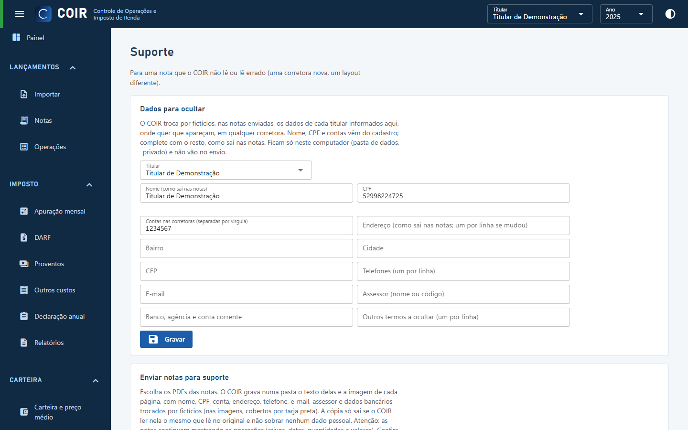

Suporte

Para uma nota que o COIR não lê, ou lê errado: de uma corretora que ele ainda não conhece, ou de um layout diferente. Você manda a nota sem os seus dados pessoais, e quem desenvolve o COIR ajusta a leitura.
Dados para ocultar
Escolha o titular. Nome, CPF e contas vêm do cadastro. Complete com o que sai nas suas notas: endereço, bairro, cidade, CEP, telefones, e-mail, assessor, banco/agência/conta corrente e outros termos. Se mudou de endereço ou de telefone, ponha um por linha: as notas antigas mostram os dados antigos.
O COIR procura esses dados em qualquer lugar da nota, em qualquer corretora: com ou sem acento, maiúsculas ou minúsculas, com as palavras coladas (como em notas antigas) e números com ou sem pontos e traços. Nome, CPF, contas, e-mail e números longos são trocados onde aparecerem. Uma palavra solta do endereço (o bairro "Vale", por exemplo) só é trocada nas linhas que já têm outro dado seu, porque a mesma palavra pode ser de outra coisa (a ação VALE ON).
Para quem tem vários titulares (um contador, por exemplo), cada um tem os seus dados. O COIR sabe de quem é cada nota pelo CPF impresso nela, e procura os dados de todos os titulares em todas as notas.
Esses dados ficam só no seu computador, na pasta de dados (_privado), e não vão no envio.
Enviar notas para suporte
Escolha os PDFs das notas. O COIR grava, numa pasta nova dentro de suporte (na pasta de
dados), para cada nota:
- o texto que o COIR lê dela, com os dados pessoais trocados por fictícios do mesmo tamanho,
no mesmo lugar (
nota-01.txt); - a imagem de cada página, com tarja preta sobre o que foi trocado (
nota-01-pagina-1.png).
Os arquivos levam nomes neutros, porque o nome do PDF pode ter o seu nome. Os PDFs não são guardados.
Uma nota só fica pronta se passar nas conferências:
- o COIR lê na cópia exatamente o que lê no original;
- nenhum dado pessoal do original sobra na cópia, e nenhum nome, CPF, conta ou e-mail que você informou;
- numa corretora que o COIR não conhece, o CPF impresso tem de ter dados para ocultar cadastrados, e o nome informado tem de aparecer na nota. Sem isso o COIR não sabe onde estão os seus dados e recusa a nota.
A lista mostra, para cada nota, de quem ela é, quantas páginas e quantos trechos foram ocultados, ou por que foi recusada. Ver abre as imagens; Abrir a pasta mostra todas no visualizador do Windows. Um contorno laranja marca um dado seu que ficou à mostra (como a palavra "Vale" na ação): confira se é mesmo de outra coisa.
Atenção: mesmo sem os seus dados, as notas continuam mostrando as operações (ativos, datas, quantidades e valores).
Depois de conferir, marque Conferi as imagens e clique em Gravar o .zip. Escrever
e-mail abre o seu programa de e-mail com uma mensagem para suporte.coir@gmail.com. Anexe o
.zip, descreva o problema e envie. Nada sai do seu computador sem essa ação sua.
Pela linha de comando: coir notas anonimizar <PDFs ou pastas> [--imagens].